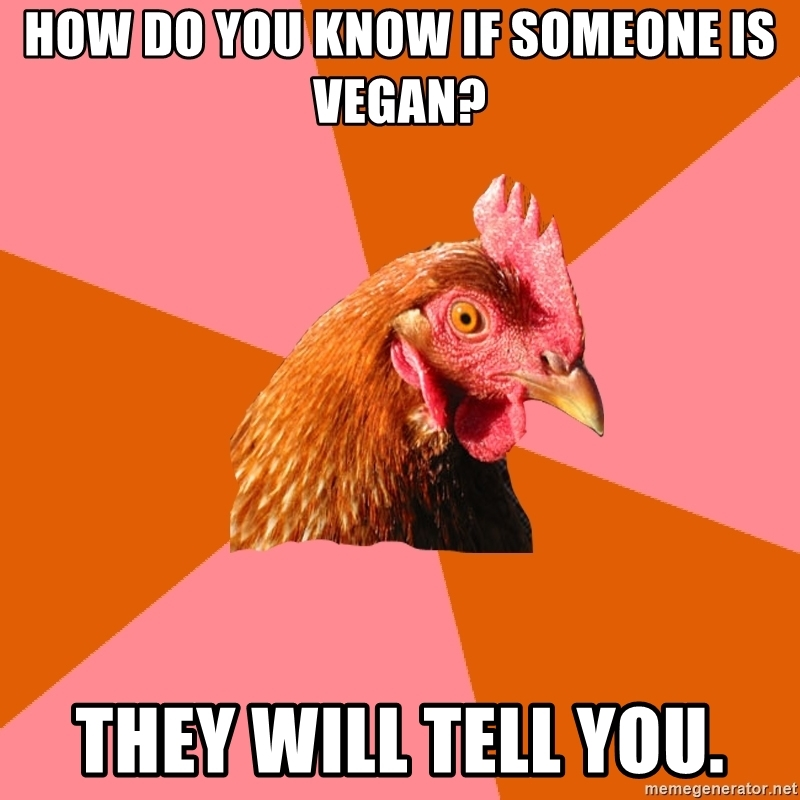

* Everything is a Learnable Skill *
Only in Still Waters Do Things Reflect
Reflections - Identity, Values and Strengths.
11 February 2022
How do you know if someone is vegan? They will tell you. Unfortunately yes, this is me telling you I am a vegan and have been for the last 11 years. How did I come to this decision? Part of my core values are compassion, equality and curiosity. Essentially curiosity was what led me to repeated exposure to animal rights facts and information. The compassion and equality values kicked in after watching 'The Cove' (not even a vegan movie but a movie about animal rights). I decided to make the change for a month, that has now turned into 11 years.
What are the consequences?
- I had to learn to cook differently
- I had to think more about having a balanced diet
- Yes, I am that annoying person every time I go to a cafe that asks what could be vegan on the menu
Lastly, this is really why I do it...in 11 years, I have saved
- 16,718,058 litres of water
- 11,242 square metres of forest
- 4,015 animal lives
- 72,672 kgs of Grain
- 36,537 kgs of CO2
I think you inherit a lot of your identify through you parents. My parents are both from England. They moved to NZ just before they had kids. As a family the culture we built was a hybrid of British culture and NZ culture. With only being 5 of us in NZ - mum, dad, sister, brother and me, we are close and it has built very strong values around Teamwork. My dad is a collector and lover of art. From very early on creativity and being curious about other cultures and countries was an important part of being a Bush.
During my professional career, I have been a good team player that really empathizes and understands the needs of others. This led me to manage teams in the past. Teamwork and compassion can lead to me supporting others rather than focusing on what is important for me. I can be fairly accommodating and at times have struggled to build boundaries. When working in team environment, I may have a tendency to help others rather than focus on my objectives.
How is this going to help me during my learning at Dev Academy? Creativity and curiosity can help me to think differently and to have fun with a problem. Creativity can lean into perfectionism as times. I may be hesitant to push code through because I don't trust that it is perfect yet Teamwork can mean I enjoy working with others. Can also mean it can be hard when I am alone trying to work through tasks. Additionally I can focus on others needs rather than my own objectives.
While we have talked a lot about my values, identity and strengths, lets talk about lessons. In fact a time when I learnt a lesson where my strengths can becomes a weakness. In a previous workplace, I needed to lead the team through change management. With any change, different personality types can act/react in different ways. To help me to understand what each team member would need during this time, I relied on the teams DISC profiles to inform me of their strengths and weaknesses. I then built resources for each personality type: eg I built step by step instructions for those that like details and need more documentation. I had coaching sessions with those that needed to talk things through. I also made it clear what was the objective of this change for those that like to understand the bigger picture.
After delivering this change, I got feedback from a senior manager that I was doing too much for the employee's, that they also needed to do some of the hard work through the transition. I think my focus was on trying to have compassion for each employee. I over flexed my teamwork and compassion muscle so they did not have to flex theirs. This meant they missed out on self-learning and how they could help themselves during change. If I was to do that again, I would probably allow myself to let things get uncomfortable. This would help them build their own process to overcome change and achieve a sense of achievement/accomplishment. I would just support them through their journey. I also hope that this post has made you believe that... Everything is a Learnable Skill..
Everything is a learnable skill is my virtual journey through the wierd and wonderful world of coding, click here to see more posts
| *LinkedIn* | *Twitter* | *Email* |
|---|---|---|